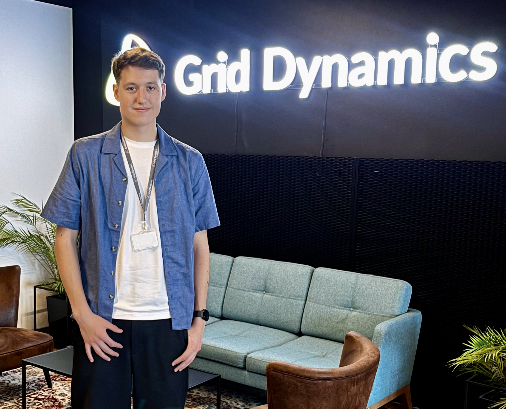

Experienced Backend Developer with 3+ years of expertise building scalable systems using Java, Spring Boot, REST/gRPC.
I bridge the gap between business vision and digital reality. Whether you are transitioning services online or launching a new venture, I ensure a fast, goal-oriented rollout with an architecture built to handle high-load traffic.
Result: Shorter time-to-market and a solid technical foundation from day one.
I help you scale without the "heavy lifting" costs. I specialize in identifying bottlenecks and refactoring legacy monoliths into agile microservices, allowing your business to handle increased loads with zero downtime.
Result: A 40% performance boost and significantly lower infrastructure overhead.
I turn "AI hype" into actual business value. By integrating Large Language Models (LLMs) and semantic search into your core products, I help you automate complex workflows and provide a personalized customer experience.
Result: Real-time AI delivery and semantic search capabilities that competitors can’t match.
Investment Secured
Engineered an AI-driven ecosystem that became the core value proposition for a successful $100k seed funding round for company.
Performance Boost
Achieved by migrating 6+ services to microservices architecture and optimizing data filtering.
Latency Reduction
Improved database response time through SQL query optimization and indexing strategies.
Beyond coding, I act as an internal speaker promoting engineering best practices. I have mentored junior engineers and introduced code review standards that reduced integration issues by 30%.

I am a business-oriented engineer who translates complex technical challenges into growth opportunities. With over 3 years of hands-on experience, I have delivered impactful solutions ranging from independently designing high-load email tracking microservices to advanced AI integrations.
My most notable achievement involved architecting and implementing a ChatGPT-powered semantic search for a hotel booking platform. This innovation was a key factor in the company securing $100,000+ in investment, enabling continued growth and product development.
Topic: "OWASP Top 10 - Broken Access Control" — A practical deep dive into API vulnerabilities, unauthorized access exploits, and defensive security patterns.
Topic: "SOLID: Why our things suffer and our code too?" — A deep dive into architectural debt and clean code principles.
Leading migration of 6+ core services to microservices and mentoring junior engineers.
Topic: "AI in Modern Development" — Discussing the practical integration of LLMs into commercial software products.
Architected AI-powered semantic search and intelligent guest assistants that were instrumental in securing $100,000 in investment. Optimized core data filtering, achieving a 40% performance boost.
Reduced response times by 30% through SQL query optimization and indexing.
Challenge: Transitioning a hotel booking platform to modern AI standards to secure investment.
Solution: Integrated ChatGPT into the core product, designing the complete real-time communication flow between frontend and backend.
Impact: Secured $100,000+ in funding and achieved a 40% increase in query processing speed.
Challenge: Scaling a monolithic fitness & wellness platform with zero downtime.
Solution: Led the migration of 6+ core services using Java 21, REST, and Kubernetes, collaborating with 4 cross-functional teams.
Impact: 40% performance improvement and enhanced system resilience.
Leveraging my background in Cybersecurity (NURE) to build systems that are not only fast but inherently secure.
I don't just write code; I grow teams. By mentoring juniors and introducing code standards, I reduced integration issues by 30%.
Working in distributed teams across different time zones. Fluent in English, Polish, and Ukrainian.